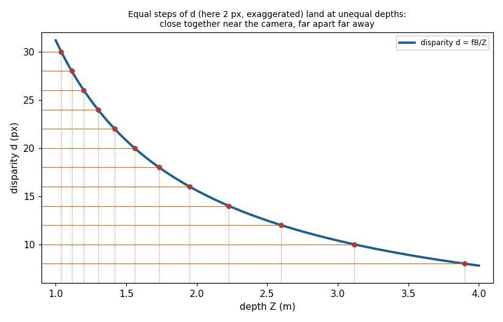

الدرس C2 · توضيح
لماذا يكبر خطأ التكميم مع المسافة؟
جواب السؤال السابق: الخطوة عند 2.5 م = 2.52 × 0.125 / 31.2 = 25.1 mm.
1. الفكرة بجملة واحدة
الحساس يقيس الإزاحة (disparity) وليس العمق. والإزاحة تتغير بسرعة عندما تتحرك الأشياء القريبة، وتتغير ببطء شديد عندما تتحرك الأشياء البعيدة. فعلامات المسطرة المتساوية على محور الإزاحة تقابل مسافات صغيرة قرب الكاميرا ومسافات كبيرة بعيداً عنها.
تشبيه: ضع إبهامك أمام عينيك وأغلق عينًا ثم الأخرى. إبهامك «يقفز» كثيراً. الآن انظر إلى جبل بعيد: لا يقفز تقريباً. لو كان عندك مقياس يحس بقفزة أقل من حد معين، فإنك لن تفرّق بين 3000 م و3040 م للجبل، لكنك تفرّق بين 30 سم و34 سم للإبهام.
2. الرسم

المنحنى الأزرق هو الإزاحة d = f B / Z. رسمتُ علامات المسطرة بخطوات 2 بكسل (مبالغ فيها للتوضيح). الخطوط الأفقية البرتقالية متساوية البعد. وأين تقطع المنحنى؟ النقاط الحمراء، وإسقاطها على محور العمق Z:
- قرب الكاميرا المنحنى شديد الانحدار، فالنقاط الحمراء قريبة من بعضها (الفرق في العمق صغير).
- بعيداً عن الكاميرا المنحنى شبه أفقي، فالنقاط متباعدة (الفرق في العمق كبير).
هذا هو السبب الكامل. الخطوات متساوية على المحور الرأسي، وغير متساوية على المحور الأفقي.
3. بأرقام حقيقية (خطوة 0.125 بكسل)
| d marks (px) | depth Z = fB/d (m) | gap between depths |
| 20.750 / 20.875 / 21.000 | 1.5025 / 1.4935 / 1.4846 | 9.0 mm |
| 10.250 / 10.375 / 10.500 | 3.0416 / 3.0050 / 2.9692 | 36 mm |
نفس الخطوة 0.125 بكسل، فرق في العمق 9 مم عند 1.5 م و36 مم عند 3 م: أربعة أضعاف لأن المسافة ضعفان ومربعها أربعة.
4. من زاوية أخرى: تحريك الجسم 1 سم
ماذا يحدث للإزاحة إذا اقترب الجسم 1 سم؟
- عند 1.5 م: تتغير الإزاحة بحوالي 0.139 px، وهذا أكبر من خطوة 0.125: يحس الحساس بحركة 1 سم.
- عند 3 م: تتغير بحوالي 0.035 px فقط، أي ربع خطوة: الحساس لا يرى الحركة (يحتاج حوالي 4 سم).
5. المعادلة (بالتفاضل)
ميل المنحنى d = fB/Z هو dd/dZ = −fB/Z2. الميل صغير عندما Z كبير. خطوة Δ على d تقابل خطوة في العمق:
ΔZ = Δ / |dd/dZ| = Z2 Δ / (f B)
وهذه هي الصيغة التي ذكرناها، وهي الآن ليست رقماً يجب حفظه بل نتيجة شكل المنحنى.
سؤال للتأكد (احسب بنفسك)
عند Z = 1 m: كم خطوة العمق (بخطوة 0.125 وبـ f B = 31.2)؟ وكم تتغير الإزاحة لو اقترب الجسم 1 سم؟ (فكّر: هل يحس الحساس بحركة 1 سم عند 1 م؟)
القادم: نعود إلى C2 الطبقة 2 (التعريفات والاشتقاق).